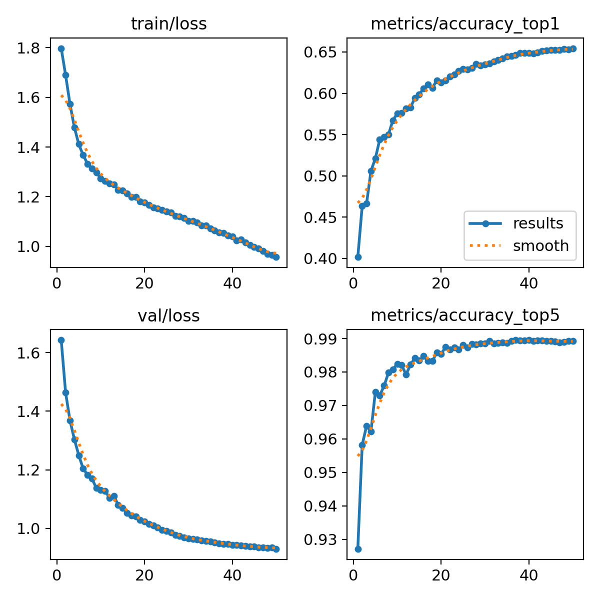
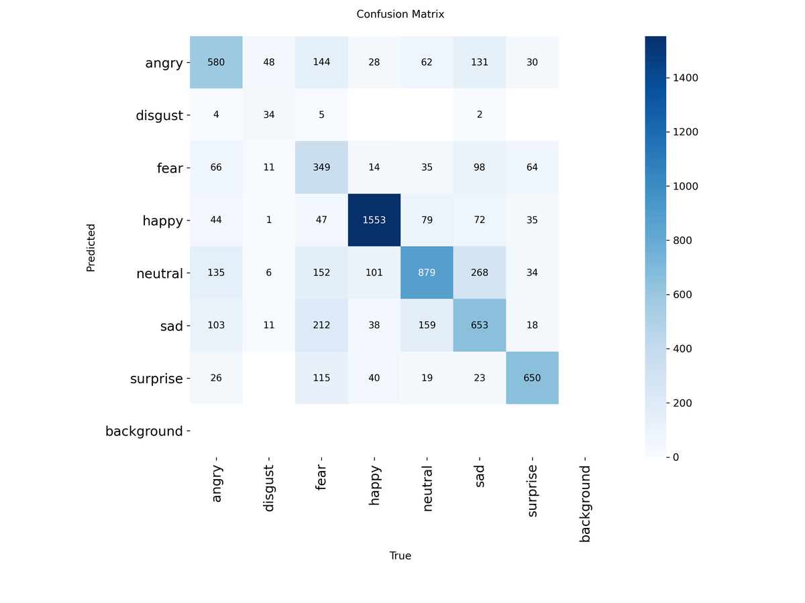
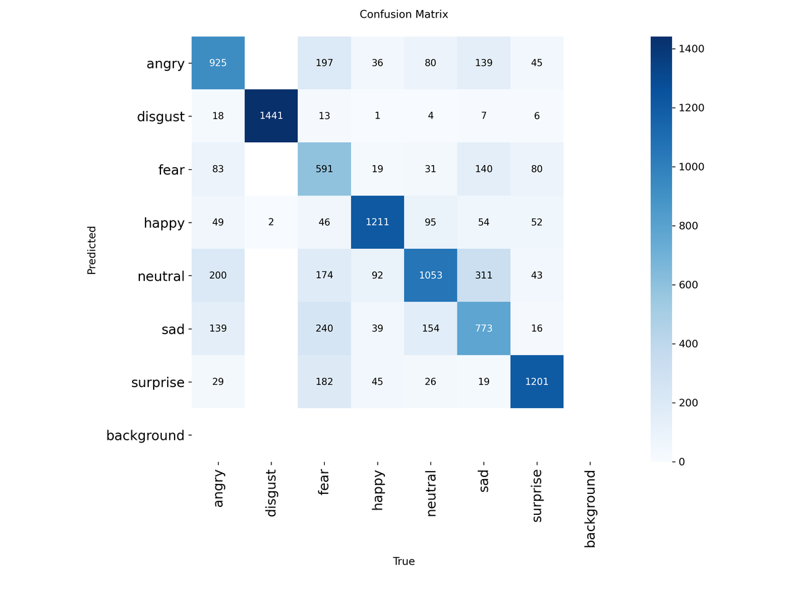

Does preprocessing help facial expression recognition?
The course taught median filtering, Gaussian smoothing and CLAHE as things you do before classification. We tested whether they actually help. On FER-2013, they do not — and the thing that does help does not show up in accuracy at all.
| Term | Stands for | What it is |
|---|---|---|
| FER | Facial Expression Recognition | Classifying a face into an emotion. FER-2013 is the standard benchmark dataset |
| CLAHE | Contrast Limited Adaptive Histogram Equalisation | Boosts local contrast in small tiles rather than across the whole image |
| HOG | Histogram of Oriented Gradients | A hand-crafted feature describing edge directions in each patch |
| SIFT | Scale-Invariant Feature Transform | A hand-crafted keypoint descriptor that survives scaling and rotation |
| Ablation study | — | Changing one variable at a time while holding everything else fixed, to find out what actually causes a result |
| Macro-F1 | — | F1 averaged with equal weight per class, so a rare class like disgust counts as much as happy |
| Confusion matrix | — | A grid of true class against predicted class. The diagonal is what the model got right |
| Top-1 / Top-5 | — | Whether the correct answer was the model's first guess, or anywhere in its top five |
| Augmentation | — | Generating extra training images by flipping, rotating and shifting the originals |
The experiment
The point was not to win on FER-2013 — the state of the art is well past what a coursework project reaches. The point was to isolate one variable. Four data conditions:
- Original — FER-2013 untouched
- Augmented, no preprocessing
- Augmented + preprocessed — median filter, Gaussian filter, CLAHE
- Class-balanced augmentation — augmentation targeted at the under-represented classes
Each crossed against six model families: SVM, logistic regression and random forest on HOG + SIFT features; YOLOv11n-cls; VGG19; ResNet50. The test set stayed identical at 7,178 images throughout, so every number is comparable to every other number.
Result one: preprocessing hurt
| Condition (YOLOv11n-cls) | Accuracy | Macro F1 |
|---|---|---|
| Original — no augmentation, no preprocessing | 0.6542 | 0.6036 |
| Augmented, no preprocessing | 0.6456 | — |
| Class-balanced augmentation | 0.6457 | 0.6223 |
| Augmented + preprocessed | 0.5869 | — |
FER-2013 images are 48×48 pixels. An expression is carried by fine detail — the crease at a mouth corner, the tightening around an eye. Median and Gaussian filtering are designed to suppress high-frequency information, and at this resolution the high-frequency information is the signal. CLAHE then amplifies local contrast including whatever noise survived. Six and a half points of accuracy went into cleaning up the only evidence the classifier had.
The deep CNNs told the same story from the other direction, and both landed well below the small YOLO classifier: VGG19 reached 0.58 with augmentation and preprocessing against 0.54 on original data; ResNet50 managed 0.52 and 0.48. Large ImageNet backbones on 48×48 grayscale faces are a poor fit, and the results say so.
The classical ceiling
HOG + SIFT features with classical classifiers topped out around 0.43–0.48 — best was random forest with class-balanced augmentation at 0.4790 accuracy and 0.4282 macro-F1. Roughly seventeen points below the learned-feature models on identical data, which is a clean demonstration of why hand-crafted descriptors gave way to learned ones for this task.

Result two: the metric was hiding the improvement
Class-balanced augmentation looks like a wash on accuracy — 0.6457 against a 0.6542 baseline. It is not. Macro-F1 rises from 0.6036 to 0.6223, and the reason is visible in one class.


Disgust is the smallest class in FER-2013 by a wide margin. The baseline model largely gave up on it — 0.4359 F1 — and lost almost nothing in overall accuracy for doing so, because the class is rare. Balanced augmentation more than doubles its recall while overall accuracy stays flat. If you evaluate on accuracy alone, the single most useful change in the whole study is invisible.
The most confident class throughout is happy at 0.8613 F1, which is unsurprising: it is the best-represented, and a smile is the most visually distinct expression in the set.
Scale and what I would fix
Seven notebooks, 115 cells, 2,356 lines of notebook code, plus two standalone validation scripts and around twenty trained artefacts with weights retained so results can be re-checked rather than merely believed. Trained on Kaggle and Colab GPUs.
- The report was never finished. The abstract and conclusion sections are empty in the submitted draft. The code and results are complete; the write-up is not, and pretending otherwise here would be the wrong call.
- Single train/test split, no cross-validation and no confidence intervals — so the smaller gaps (0.6456 vs 0.6457) are noise and should not be read as differences.
- Preprocessing was tested as one fixed three-step chain. Testing each step in isolation would say which operation does the damage, which is the more useful question and the obvious next experiment.
- FER-2013's own labels are known to be noisy, which caps what any model can score and is not accounted for here.